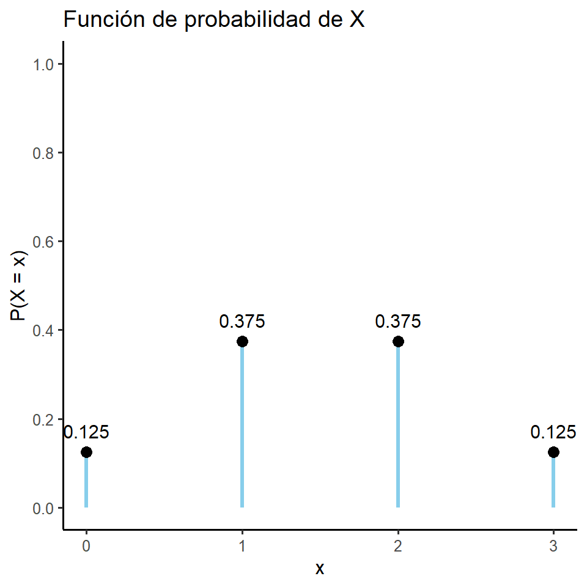
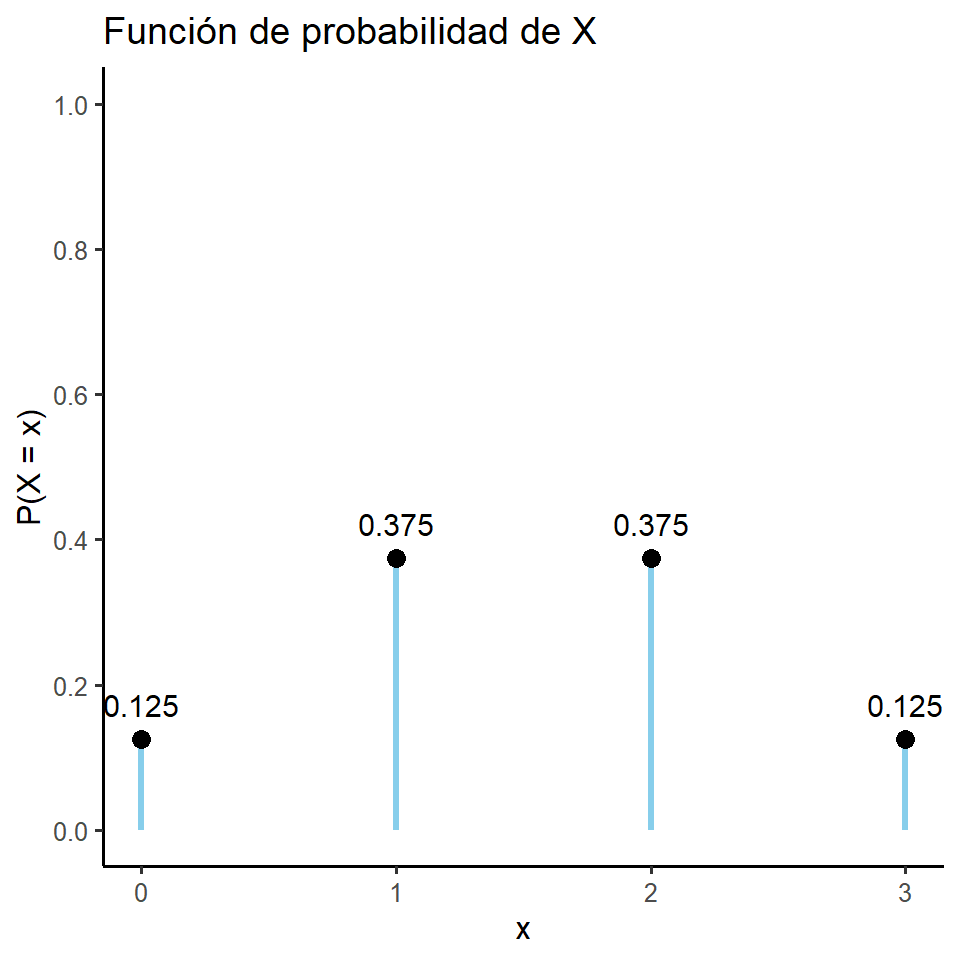

Sea \((\Omega, \mathcal{A}, P),\) un espacio de probabilidad, se define una variable aleatoria \(X\) como una función con dominio \(\Omega\) y codominio al conjunto de \(\mathbb{R}\), es decir,
\[ X:\Omega \rightarrow \mathbb{R} \]
Se dice que la variable \(X\) es aleatoria debido a que involucra la probabilidad de los resultado del espacio muestral \(\Omega\), y esta es una función definida sobre dicho espacio muestral, de manera que transforma a todos los posibles resultados de \(\Omega\) en cantidad numéricas.
Por ejemplo suponga que se tienen 3 bolas en una caja (2 Azules, 1 Roja, 1 Verde) y se extraen sin reemplazo 2 bolas de esa caja (sin importar el orden).
Podríamos definir \(X = \text{El número de bolas Rojas Extraídas}\).
Ahora bien. Definamos el espacio \(\small \Omega = \{ (Azul_1, Azul_2), (Azul_1, Roja), (Azul_1, Verde), (Roja, Verde), (Azul_2, Roja), (Azul_2, Verde) \}\)
Cuáles valores puede tomar \(X\) ?.
\(x = 0 : \small\{(Roja, Verde)\}\).
\(x = 1 : \small\{(Azul_1, Roja), (Azul_2, Roja), (Azul_1, Verde), (Azul_2, Verde)\}\).
\(x = 2 : \small\{(Azul_1, Azul_2)\}\).
\(x = 3 : \small\emptyset\).
Note como \(X\) es una función de \(\Omega \rightarrow \mathbb{R}\)
Cada valor posible de una variable aleatoria hace una correspondencia con un o una colección de resultados posibles del espacio muestral.
Cada resultado de una variable aleatoria está asociado a mínimo algún evento del espacio muestral.
Note que la variable aleatoria no es una función de probabilidad.
Ahora bien dada la variable aleatoria y suponiendo que cada resultado presenta la misma probabilidad se puede definir la siguientes probabilidades para los distintos valores de \(X\).
\[ P(X=x) =\begin{cases}\frac{1}{6}, & \text{si } x = 0. \\ \frac{4}{6}, & \text{si } x = 1. \\ \frac{1}{6}, & \text{si } x = 2. \\ 0, & \text{en otro caso }. \end{cases} \]
Un conjunto es numerable si es finito, es decir, sus elementos se pueden enumerar. O bien, infinitamente numerable si se pueden hacer corresponder sus elementos uno a uno con el conjunto de números naturales.
Si el rango de una variable aleatoria \(X\) es numerable, entonces \(X\) es una variable aleatoria discreta.
Sea \(X,\) una variable aleatoria discreta con espacio muestral \(\Omega\) y sea \(P\) una probabilidad sobre \(\Omega\). La función \(f_x: R_x \rightarrow \mathbb{R}\), definida como:
\[ f_x(x) = P(X=x) \]
recibe el nombre de función de probabilidad o distribución de probabilidad.
Si se tienen dos eventos disjuntos \(X=a\) y \(X=b\), entonces:
\(P(X=a \cup X=b)= P(X=a) + P(X=b)\)
También, es importante definir el evento \(X \leq a\) de modo que:
\(P(X\leq a)= P(X < a \cup X=a) = P(X<a) + P(X=a)\)
De este modo, si una variable aleatoria toma valores de \(\{0,1,2\}\), entonces:
\(P(X\leq 2)= P(X < 2 \cup X=2) = P(X<2) + P(X=2)\)
Mientras que:
\(P(X< 2)= P(X=0) + P(X=1)\)
Considere el experimento que consiste en lanzar tres veces una moneda equilibrada al aire. Se define la variable aleatoria \(X\): número de escudos obtenidos, entonces, el espacio muestral es
\(\Omega = \{CCC, CCE, CEC, ECC, EEC, ECE, CEE, EEE\}\) y \(X\) puede asumir los valores 0,1,2 y 3. Estos valores se asocian con probabilidades de la siguiente manera:
\(P(X=0) = P(\{C,C,C\}) = \tfrac{1}{8}\)
\(P(X=1) = P(\{C,C,E\} \cup \{C,E,C\} \cup \{E,C,C\}) = \tfrac{1}{8} + \tfrac{1}{8} + \tfrac{1}{8} = \tfrac{3}{8}\)
\(P(X=2) = P(\{E,E,C\} \cup \{E,C,E\} \cup \{C,E,E\})= \tfrac{1}{8} + \tfrac{1}{8} + \tfrac{1}{8} = \tfrac{3}{8}\)
\(P(X=3) = P(\{E,E,E\}) = \tfrac{1}{8}\)
Por ende la función de probabilidad es:
\[
P(X=x) =\begin{cases}\frac{1}{8}, & \text{si } x = 0. \\ \frac{3}{8}, & \text{si } x = 1. \\ \frac{3}{8}, & \text{si } x = 2.\\ \frac{1}{8}, & \text{si } x = 3. \\ 0, & \text{en otro caso }. \end{cases}
\]

Definición: Una función \(f_X: R_X \rightarrow \mathbb{R}\) es una función de probabilidad de una variable \(X\) si y solo si se cumple con las siguientes propiedades:
\(f_X(x) = P(X = x) \geq 0, \; \forall x \in R_X\)
\(\sum_{x \in R_X} f_X(x) = 1\)
Para la primera condición, es evidente por ser una probabilidad. En el caso de la segunda propiedad:
\[ \sum_{x \in R_X} f_X(x) = \sum_{x \in R_X} P(X = x) = P\left( \bigcup_{x \in R_X} (X = x) \right) = P(\Omega) = 1 \]
\[
\sum_{x \in R_X} f_X(x)
= \frac{1}{8}+\frac{3}{8}+\frac{3}{8}+\frac{1}{8} = 1
\]
El caso de ir acumulando las probabilidades, ya hemos estudiado cuando determinamos la probabilidad de ocurrencia de los eventos del tipo \(\{X\leq x\}\). La función de distribución acumulada de probabilidad se define de la siguiente forma:
Definición: Sea \(X\) una variable aleatoria con función de probabilidad \(f_X\). A la función definida en \(f_X: R_X \rightarrow \mathbb{R}\), dada por:
\[ F_X(x) = P(X \leq x) = \sum_{k \in R_X, \; k \leq x} P(X = k) \] Se le llama función de distribución acumulada de \(X\)
Además, si \(X\) sólo toma un número finito de valores \(x_1, x_2, \cdots, x_n\), entonces la función de distribución está dada por:
\[ F_X(x) = \begin{cases} 0, & \text{si } x < x_1 \\ f(x_1), & \text{si } x_1 \leq x < x_2 \\ f(x_1) + f(x_2), & \text{si } x_2 \leq x < x_3 \\ \vdots & \\ f(x_1) + \cdots + f(x_n) = 1, & \text{si } x \geq x_n \end{cases} \]
Continuando con el experimento anterior. La función de distribución acumulada de \(X\) es en trozos:
Si \(x < 0\), entonces \(\small F_X(x) = 0\).
Si \(0 \leq x < 1\), entonces \(\small F_X(x) = f_X(0) = \tfrac{1}{8}\).
Si \(1 \leq x < 2\), entonces \(\small F_X(x) = f_X(0) + f_X(1) = \tfrac{1}{8} + \tfrac{3}{8} = \tfrac{1}{2}\)
Si \(2 \leq x < 3\), entonces \(\small F_X(x) = f_X(0) + f_X(1) + f_X(2) = \tfrac{1}{8} + \tfrac{3}{8} + \tfrac{3}{8} = \tfrac{7}{8}\).
Si \(x \geq 3\), entonces \(\small F_X(x) = f_X(0) + f_X(1) + f_X(2) + f_X(3) = \tfrac{1}{8} + \tfrac{3}{8} + \tfrac{3}{8} + \tfrac{1}{8} = 1\)
\[ \small F_X(x) = \begin{cases} 0, & \text{si } x < 0 \\ \frac{1}{8}, & \text{si } 0 \leq x < 1 \\ \frac{1}{2}, & \text{si } 1 \leq x < 2 \\ \frac{7}{8}, & \text{si } 2 \leq x < 3 \\ 1, & \text{si } x \geq 3 \end{cases} \]
La función de distribución en este caso para valores menores a cero es cero, y para valores mayores o iguales a 4 es 1
1.Considere el experimento de lanzar dos dados al aire y sea \(X\) la suma de ambos.
Encuentre \(f_X \text{ y } F_X\)
2.Se selecciona una muestra aleatoria de 3 personas del padrón de votantes de la última elección. Sea \(X\) el número de personas que votaron por el partido Acción Ciudadana (PAC). Suponga que la probabilidad de que una persona del padrón vote por el PAC es de 0,40, además suponga que la selección de los tres votantes son pruebas independientes.
Se sabe que de un grupo de cuatro componentes electrónicos dos son defectuosos. Un inspector prueba los componentes uno por uno hasta encontrar los dos componentes en mal estado, tome en cuenta que una vez que el inspector encuentre el segundo componente defectuoso las pruebas concluyen. Sea \(X\) el número de pruebas realizadas hasta encontrar el segundo componente defectuoso. Establezca una distribución de probabilidad y distribución acumulada para la variable \(X\).
\(X: \Omega= \{(1,1) , (0,1,1) , (1,0,1) , (0,0,1,1) , (0,1,0,1) , (1,0,0,1)\}\)
\(X: \{2,3,4\}\)
\[ \small f_X(x) =\begin{cases}\frac{1}{6}, & \text{si } x = 2. \\ \frac{1}{3}, & \text{si } x = 2. \\ \frac{1}{2}, & \text{si } x = 3. \\ 0, & \text{en otro caso }. \end{cases} \]
\[ \small F_X(x) = \begin{cases} 0, & \text{si } x < 2 \\ \frac{1}{6}, & \text{si } 2 \leq x < 3 \\ \frac{1}{2}, & \text{si } 3 \leq x < 4 \\ 1, & \text{si } x \geq 4 \end{cases} \]
Sea \(X\) una variable aleatoria discreta con función de distribución acumulada de probabilidad \(F_X\).
Entonces, esta función cumple con las siguientes propiedades:
\(F_X(x) \geq 0, \ \forall x \in \mathbb{R}.\)
Si \(x \leq y\), entonces \(F_X(x) \leq F_X(y)\) (es creciente).
\(P(X > x) = 1 - F_X(x), \ \forall x \in \mathbb{R}.\)
\(P(a < X \leq b) = F_X(b) - F_X(a) \quad \text{para cualesquiera } a \text{ y } b \text{ reales tales que } a < b.\)
\(\lim_{x \to -\infty} F_X(x) = 0 \quad \text{y} \quad \lim_{x \to +\infty} F_X(x) = 1.\)
Sea \(X\) una variable aleatoria discreta que toma los valores \(x_1, x_2, x_3, \dots\) tales que \(x_i \neq x_j\) para todo \(i \neq j\).
A la función \(f_X\) sobre \(\mathbb{R}\) definida por:
\[ f_X(x) = \begin{cases} P(X = x_i), & x \in \{x_1, x_2, \dots\} \\ 0, & \text{en otro caso} \end{cases} \]
se le llama función de densidad de la variable aleatoria discreta \(X\).
Ejemplo: En un experimento donde se lanza un dado equilibrado una vez, se define \(X\) como la variable aleatoria que indica el resultado obtenido. En este caso se tiene que los posibles valores de \(X\) son \(1,2,\dots,6\).
La función de densidad de \(X\) está dada por:
\[ f_X(x) = \begin{cases} \dfrac{1}{6}, & x \in \{1,2,\dots,6\} \\ 0, & \text{en otro caso} \end{cases} \]
Sea \(X\) una variable aleatoria discreta con función de probabilidad \(f_X\), tal que \(\sum_{x_i \in R_X} |x_i| f_X(x_i)\) es absolutamente convergente, entonces se define la esperanza o valor esperado de \(X\) por:
\[ E(X) = \sum_{x_i \in R_X} x_i f_X(x_i) = \sum_{x_i \in R_X} x_i P(X = x_i) \]
Usualmente, el valor esperado se denota por: \(E(X), \ \mu_X\). En general, si \(\sum_{x_i \in R_X} |g(x_i)| f_X(x_i)\)
converge, entonces:
\[ E(g(X)) = \sum_{x_i \in R_X} g(x_i) f_X(x_i) \]
Considere el experimento que consiste en lanzar tres veces una moneda equilibrada al aire.
Se define la variable aleatoria \(X\): número de escudos obtenidos.
Entonces, la función de probabilidad para esta variable aleatoria discreta es:
\[ \small P(X = x) = \begin{cases} \dfrac{1}{8}, & \text{si } x = 0 \\ \dfrac{3}{8}, & \text{si } x = 1 \\ \dfrac{3}{8}, & \text{si } x = 2 \\ \dfrac{1}{8}, & \text{si } x = 3 \end{cases} \]
El valor esperado o esperanza de \(X\) está determinado por:
\[ \small E(X) = \sum_{x_i \in R_X} x_i f_X(x_i) = 0 \cdot \tfrac{1}{8} + 1 \cdot \tfrac{3}{8} + 2 \cdot \tfrac{3}{8} + 3 \cdot \tfrac{1}{8} = \tfrac{3}{2} \]
Del resultado anterior se concluye que el valor promedio o esperado de escudos, al lanzar tres veces una moneda, es: \(\frac{3}{2}\)
También, si se desea determinar \(E(X^2)\) se procede de la siguiente forma:
\[ E(X^2) = 0^2 \cdot \tfrac{1}{8} + 1^2 \cdot \tfrac{3}{8} + 2^2 \cdot \tfrac{3}{8} + 3^2 \cdot \tfrac{1}{8} = 3 \]
El \(3\) obtenido anteriormente es el valor esperado de la variable aleatoria \(X^2\);
esta variable se utilizará más adelante para determinar la varianza.
Note que aquí estamos usando la anterior definición:
\[ E(g(X)) = \sum_{x_i \in R_X} g(x_i) f_X(x_i) \]
Si \(X\) corresponde a una variable aleatoria discreta, para la cual existe su valor esperado \(E(X)\), y sean \(a\) y \(b\) constantes, entonces:
\(E(aX + b) = aE(X) + b\)
\(E\big(g(X) + h(Y)\big) = E(g(X)) + E(h(Y))\)
Demostraciones: (Ejercicios).
Definición:
Sea \(X\) una variable aleatoria discreta con función de probabilidad \(f_X\) y valor esperado \(E(X) = \mu_X\), se define la varianza o variancia de \(X\) por:
\[ \operatorname{Var}(X) = \sum_{x_i \in R_X} (x_i - \mu_X)^2 f_X(x_i) = E\!\left[(X - \mu_X)^2\right] \]
Usualmente, se denota por: \(Var(X)\), \(\sigma_X^2\).
En general, si \(g(X)\) es una función de la variable aleatoria \(X\), entonces:
\[ Var(X) = E\!\left[\big(g(X) - \mu_{g(X)}\big)^2\right] \]
Colorario:
Sea \(X\) una variable aleatoria discreta para la cual existen los valores esperados \(E(X)\) y \(E(X^2)\), entonces:
\[ Var(X) = E(X^2) - \big(E(X)\big)^2 \]
Demostración:
Partiendo de la definición de varianza, se tiene que:
\[ \begin{aligned} E\!\left[(X - \mu_X)^2\right] &= E\!\left[X^2 - 2X\mu_X + \mu_X^2\right] \\ &= E[X^2] - 2\mu_X E[X] + \mu_X^2 \\ &= E[X^2] - 2\mu_X^2 + \mu_X^2 \\ &= E[X^2] - \mu_X^2 \\ &= E(X^2) - \big(E(X)\big)^2 \end{aligned} \]
Ejemplo:
Sea \(X\) una variable aleatoria, con la siguiente función de densidad:
\[ f_X(x) = \begin{cases} \dfrac{1}{6}, & x \in \{1,2,\ldots,6\} \\ 0, & \text{en otro caso} \end{cases} \]
La varianza o variancia de \(X\) está determinada, por:
\(E(X) = 1 \cdot \tfrac{1}{6} + 2 \cdot \tfrac{1}{6} + 3 \cdot \tfrac{1}{6} + 4 \cdot \tfrac{1}{6} + 5 \cdot \tfrac{1}{6} + 6 \cdot \tfrac{1}{6} = \tfrac{7}{2}\)
\(E(X^2) = 1^2 \cdot \tfrac{1}{6} + 2^2 \cdot \tfrac{1}{6} + 3^2 \cdot \tfrac{1}{6} + 4^2 \cdot \tfrac{1}{6} + 5^2 \cdot \tfrac{1}{6} + 6^2 \cdot \tfrac{1}{6} = \tfrac{91}{6}\)
\(Var(X) = E(X^2) - \big(E(X)\big)^2 = \tfrac{91}{6} - \left(\tfrac{7}{2}\right)^2 = \tfrac{35}{12}\)
Del resultado anterior, los datos varían en promedio \(\tfrac{35}{12}\) alrededor del valor esperado.
Sea \(X\) una variable aleatoria discreta, se define la desviación estándar o típica de \(X\) por:
\[ \sigma_X = \sqrt{\operatorname{Var}(X)} \]
Ejemplo
En el ejemplo anterior, se determinó la varianza de una variable aleatoria \(X\), la cual es:
\[ \operatorname{Var}(X) = \tfrac{35}{12} \;\;\Rightarrow\;\; \sigma_X = \sqrt{\tfrac{35}{12}} \]
Sean \(X\) e \(Y\) dos variables aleatorias y sea \(c\) una constante, entonces:
\(Var(c) = 0\)
\(Var(X + c) = Var(X)\)
\(Var(cX) = c^2 Var(X)\)
Si \(X\) e \(Y\) son variables aleatorias independientes, entonces:
\[ Var(X + Y) = Var(X) + Var(Y) \]